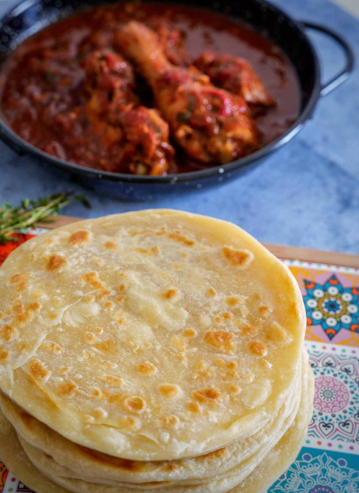
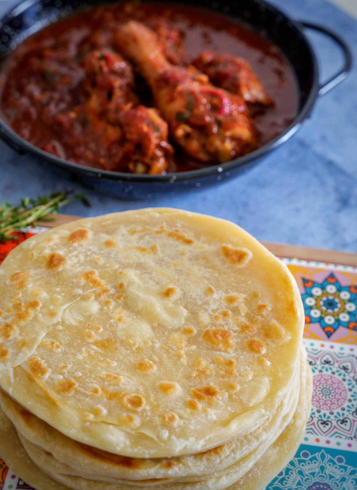

Traditions et cérémonies
Les mariages comoriens, notamment le Anda, sont réputés pour leur faste et leur importance sociale. Ils représentent un moment de prestige et de solidarité communautaire.

Gastronomie comorienne
La cuisine comorienne est riche en saveurs. Le pilao est incontournable. Les samboussa sont très populaires lors des fêtes.Mais également les incontournable couscoumas, véritables incontournables de la gastronomie comorienne.

 

Nature et paysages
Le volcan Karthala, situé sur l’île de Grande Comore, est l’un des plus grands volcans actifs du monde. Il domine les paysages et attire les randonneurs.

Développement durable
Les Comores, archipel fragile au cœur de l’océan Indien, ont engagé plusieurs actions pour protéger leur environnement et assurer un avenir durable :
- Gestion des déchets : avec l’appui du PNUD et du Fonds pour l’Environnement Mondial, le pays développe des plans intercommunaux pour une gestion plus structurée et inclusive des déchets.
- Économie bleue : le Plan Comores Émergent 2030 mise sur la mer comme moteur de croissance, en valorisant la pêche et le tourisme durable.
- Restauration des écosystèmes : l’ONG Dahari agit pour régénérer les forêts, les rivières et les récifs coralliens, essentiels à la biodiversité et à la résilience des communautés.
- Adaptation climatique : les Comores actualisent régulièrement leur plan national pour réduire les émissions et renforcer l’adaptation face aux impacts du changement climatique.
Ces initiatives montrent que la culture comorienne ne se limite pas aux traditions et à la gastronomie, mais intègre aussi une conscience écologique et une volonté de préserver les ressources naturelles pour les générations futures.